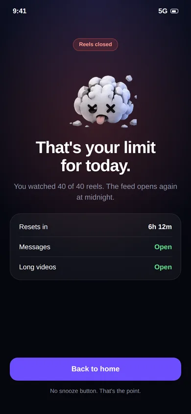

Limit YouTube Shorts. Keep YouTube.
Count and cap Shorts without touching lectures, tutorials, podcasts or music. A daily limit that closes the Shorts feed and leaves the rest of YouTube alone.

You went to YouTube to learn. You left with 200 Shorts.
YouTube is one of the best free learning tools there is, and Shorts sit right next to it in the app. A regular timer can't tell a three-hour lecture from three hundred Shorts, so it either interrupts your learning or does nothing.

Shorts are counted. Everything else isn't.
- Brainrot distinguishes the vertical Shorts player from regular horizontal videos
- Long-form videos, live streams and music play with no counter and no timer
- Every Short adds one to your daily count
- At the limit, the Shorts feed closes and you can keep watching everything else

Suggested YouTube Shorts limits.
Starting points, not rules. Adjust to your own baseline.
0 per day
A full Shorts ban while you study. Lectures and notes stay available.
10–20 per day
Enough for a short break, not enough to lose an evening.
30–50 shared
One pool across YouTube, Instagram and the rest, so the habit can't just move apps.
Keep reading.
Guides and pages that go deeper on this topic.
Common questions.
Can I limit YouTube Shorts but still watch normal YouTube videos?
Yes. Brainrot tells vertical Shorts apart from regular horizontal videos. Lectures, tutorials, podcasts and music keep playing without a counter. Only Shorts count toward your limit. More on the YouTube Shorts blocker page.
How is Brainrot different from a normal app blocker or Digital Wellbeing?
Normal app timers lock the whole app, including the parts you need, like Instagram DMs or YouTube tutorials. That is why people end up tapping "ignore limit" and going straight back to the feed. Brainrot counts and limits only the vertical short-video feed, so the rest of the app keeps working.
What happens when I reach my limit?
Brainrot shows a stop screen and takes you out of the short-video feed. You can still use the rest of the app and the rest of your phone. The counter resets the next day.
Does it work on iPhone?
Not at the moment. Brainrot relies on Android's Accessibility Service, which is what makes per-video counting possible. iOS does not offer an equivalent, so the app is Android-only.
Take your scroll back.
Free on Google Play. Set a limit in two minutes and keep every app you actually need.